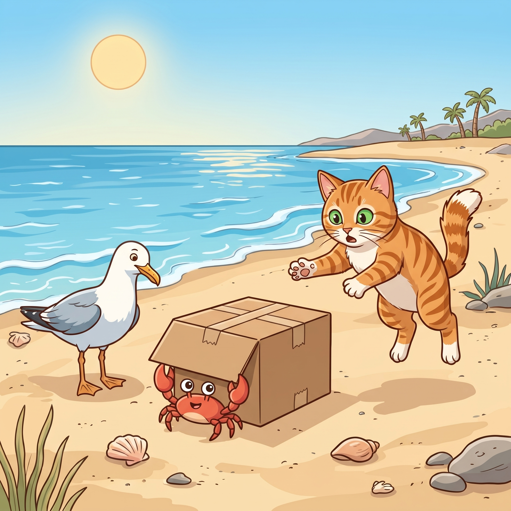

Step 1 · Say the Sound Team
wh
w and h work together in words like what.
❓what
📍where
⏰when
Read wh words. Then read one tiny story.

w and h work together in words like what.
Beach Cat saw a box.
“What is that?” said Cat.
“Where?” said the gull.
“There,” said Cat.
The box went bump.
“Why did it bump?” said Cat.
When the box moved, Cat jumped.
A crab came out.
You read wh words like what, where, why, and when.
Those words help us ask questions.
If it still feels fun, read the story one more time.